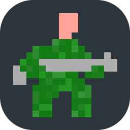

eize.ninja
...and what a ninja you are! these are some projects, for you to behold.
BERSERKORE |
BERSERKORE is a magnificent side-scroller game where you can't jump and you shoot red enemies. All of this while bombs of might fall upon you from the darkened skies. (sources) BERSERKORE was built with C++, using SFML, a YAML parser (yaml-c++), and some Boost libraries. An overkill. This version is for Windows, as I could not build nad check it on Linux or MAC, but the code is very portable and I will most probably build those versions some day which is not too far into the future. BERSERKORE is actually a remake of an old game I hacked when I was a child. |
|---|